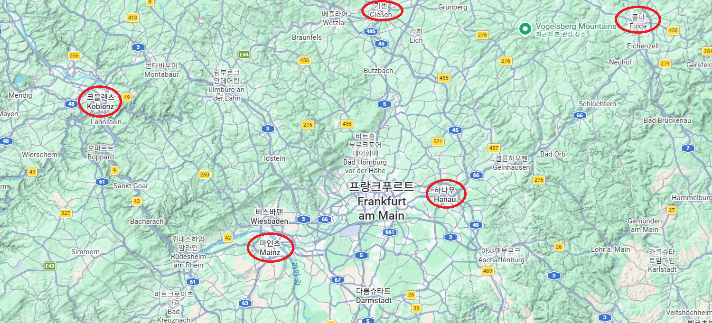
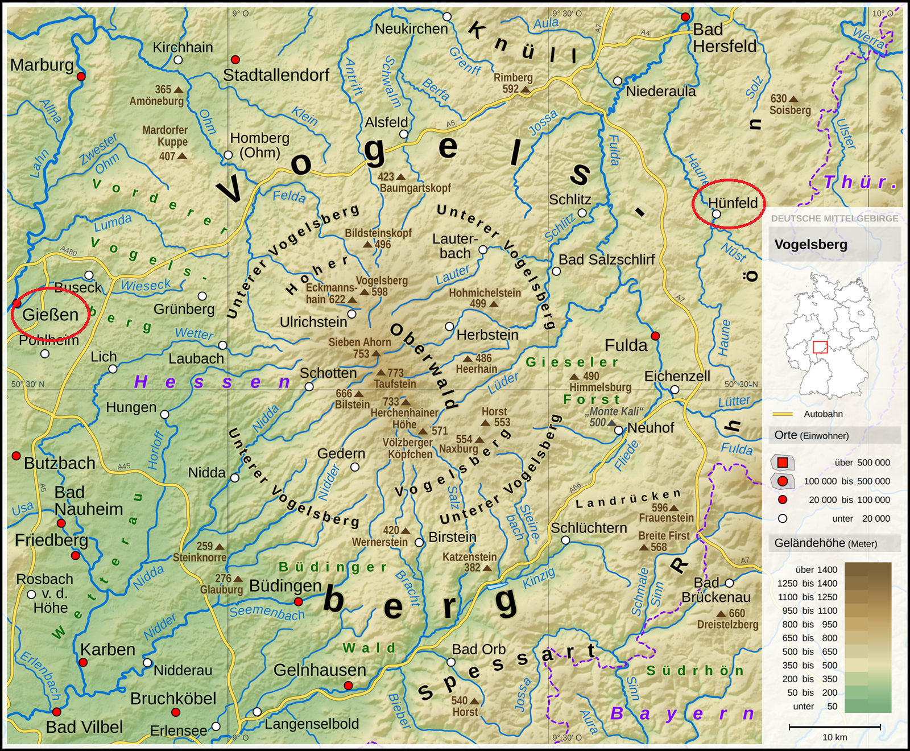
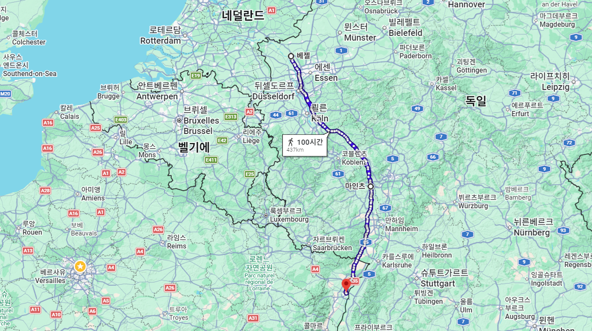
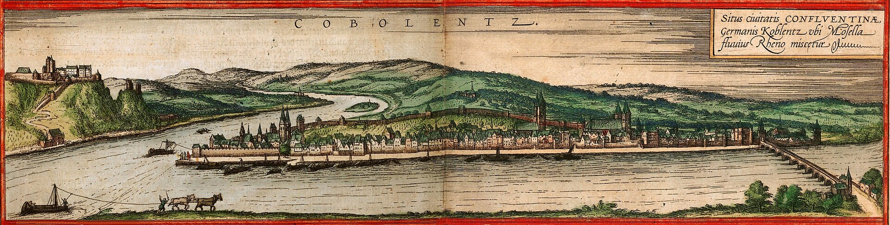
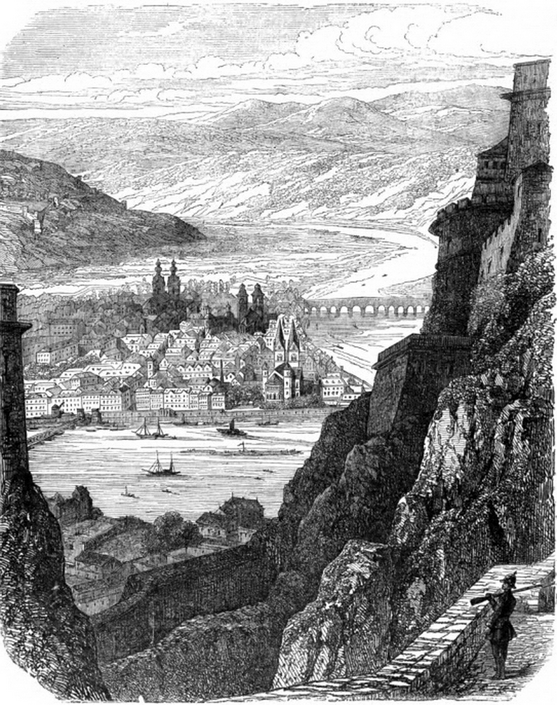
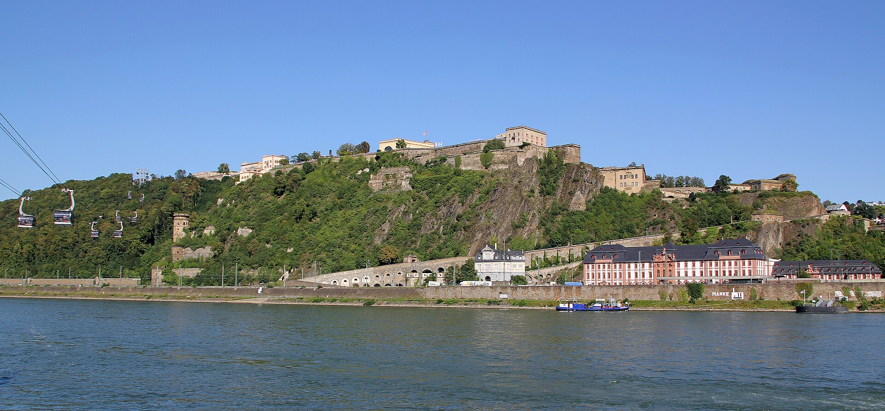
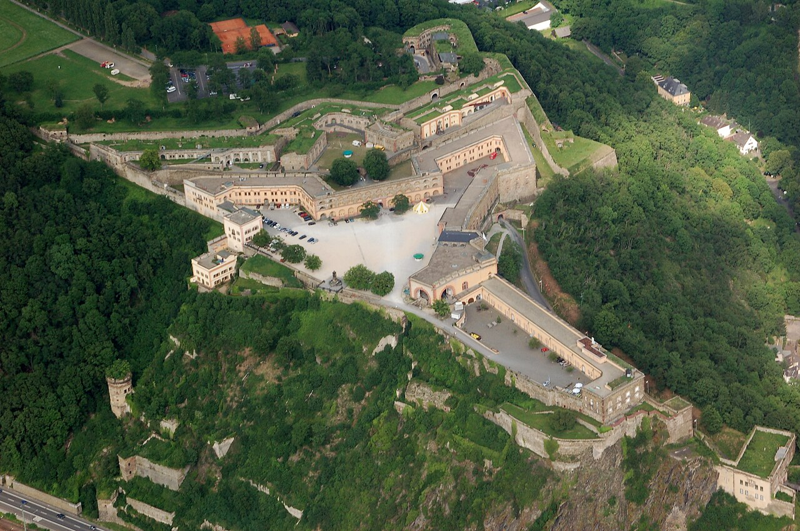
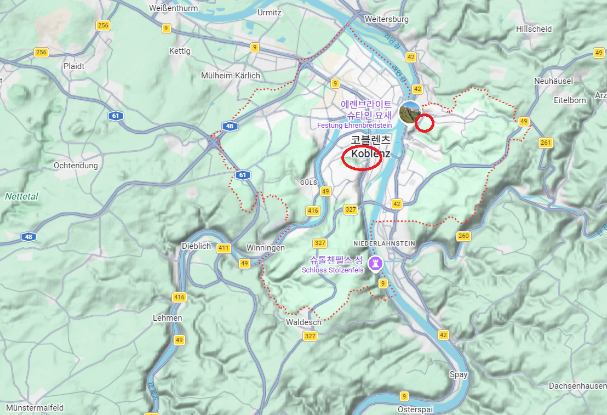
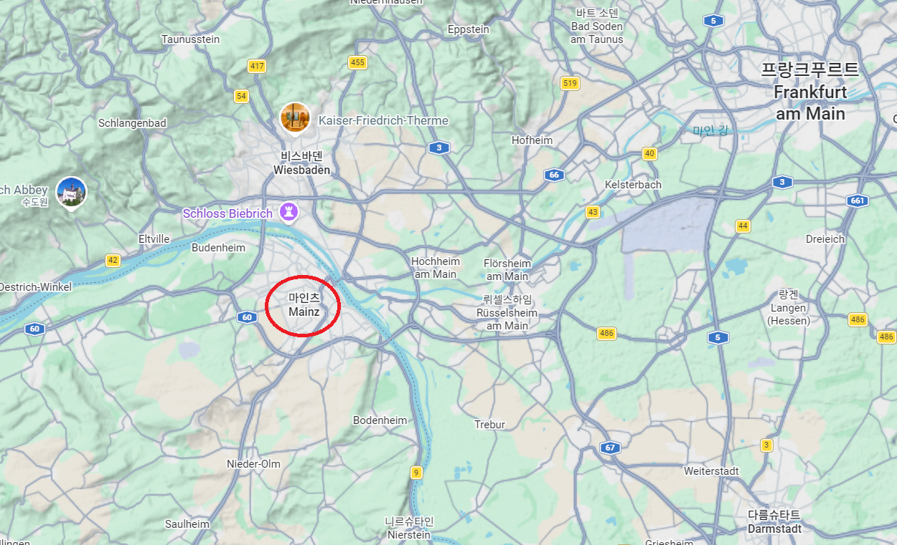
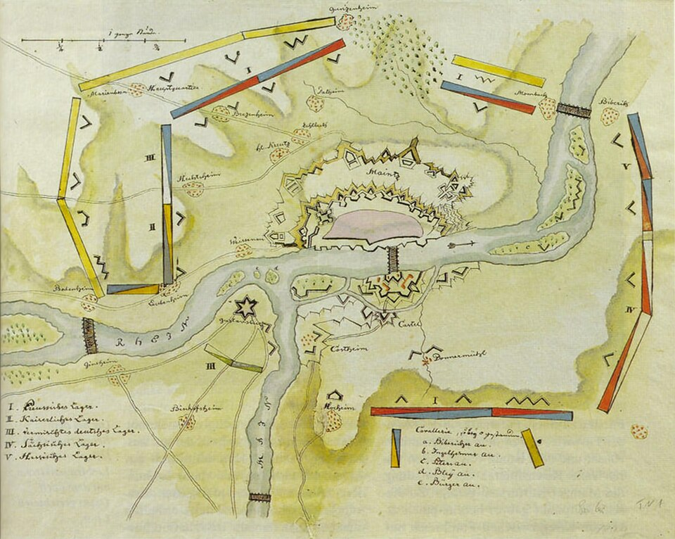

하나우 전투 (2) - 투자와 전쟁에서 예측은 금물
게시: 2026-06-01T06:30:36+09:00
전쟁에서 적의 행동을 정확하게 예측하고 미리 전략을 짤 수 있다면 천하무적이 될 것입니다. 그러나 주식투자에서는 시장의 행동을 예측하고 투자 전략을 짜지 말라는 말이 있습니다. 시장이든 적이든 상대의 행동을 정확하게 예측하기란 불가능한 법이기 때문입니다. 상대가 이렇게 행동할 것이 틀림없다는 확신을 기반으로 작전을 짰다가 그 예상이 맞다면 대박이지만 만에 하나 틀리기라도 하면 대실패로 이어지기 마련인데, 투자든 전쟁이든 크게 이기는 것도 중요하지만 지더라도 작게 져야 결국 최후의 승리를 거둘 수 있는 법입니다. 그런데 슈바르첸베르크는 나폴레옹이 코블렌츠(Koblenz)에서 라인강을 건널 것이라고 확신을 가지고 추격전의 선봉에 서서 풀다(Fulda) 바로 북쪽의 휜펠트(Hünfeld)까지 도착했던 블뤼허의 슐레지엔 방면군을 포겔스베르크(Vogelsberg)를 통과하여 기센(Gießen)을 걸쳐 코블렌츠로 방향을 틀게 합니다. 대체 슈바르첸베르크는 무슨 자신감에서 나폴레옹이 마인츠(Mainz)가 아닌 코블렌츠에서 라인강을 건널 것이라고 확신했던 것일까요?

(코블렌츠와 마인츠, 기센 등이 표시된 그 일대의 지도입니다.)

(이 지도에서 보실 수 있듯이, 휜펠트(Hünfeld)에서 기센(Gießen) 사이에는 포겔스베르크(Vogelsberg)라는 산악지대가 펼쳐져 있습니다. 블뤼허는 무슨 생각에서인지 저 산악지대를 통과하는 경로를 또 요크 장군의 프로이센 군단에게 배정하고, 자켄의 러시아 군단에게는 남쪽의 평탄한 경로를 배정했습니다. 당연히 요크의 블뤼허 및 그나이제나우에 대한 불만은 더욱 커졌고, 당시 기록을 보면 요크는 나폴레옹보다 블뤼허와 그나이제나우를 더 미워했던 것으로 보일 정도로 그들에 대한 비난을 매일 적었습니다.)
슈바르첸베르크는 나폴레옹이 코블렌츠와 마인츠 둘 중 어느 곳을 택할지 예측하려하지 않고 나폴레옹에게 코블렌츠를 강요하려 했습니다. 즉, 슈바르첸베르크는 나름 큰손 투자가로서 시장을 예측하기 보다는 시장을 조작하려고 했던 것입니다. 그 수단으로 사용한 것이 바로 바이에른군이었습니다. 라이프치히 전투가 벌어지기도 전인 10월 8일 오스트리아와 리드(Ried) 조약을 맺고 나폴레옹에게 선전포고까지 했던 바이에른으로서는 새로운 우방들에게 자신의 충심을 호소할 겸, 거의 전병력을 동원하여 후퇴하는 나폴레옹의 숨통을 끊기 위해 라인 강변에서 4만3천이라는 상당히 큰 병력으로 진을 치고 있었습니다. 실은 바이에른군의 규모는 그런 대규모 병력을 동원할 수준이 아니어서 1만8천에 불과했고, 나머지 2만5천은 지원나온 오스트리아군이었습니다. 이들을 지휘하는 총사령관은 바이에른군의 제1인자이자, 평소부터 프랑스군에 대해 감정이 상해 있었던 브레더(Karl Philipp von Wrede) 장군이었습니다. 슈바르첸베르크는 브레더에게 지시를 내려, 마인츠로 가기 위해서는 반드시 거쳐야 하는 하나우(Hanau)의 킨지히(Kinzig) 강변에서 나폴레옹을 막아서도록 했습니다.
(오랜만에 다시 등장하는 브레더입니다. 그와 프랑스군에 대한 그의 악감정에 대해서는 https://nasica1.tistory.com/824 을 참조하시기 바랍니다.) 후퇴하던 나폴레옹의 병력은 티푸스와 굶주림, 탈영 등으로 인해 빠르게 줄어들고 있었으니, 나폴레옹이 하나우 근처까지 왔을 때는 대략 6~7만 정도의 규모였을 것입니다. 브레더의 4만3천 병력이면 나폴레옹을 완전히 패배시키고 포로로 잡을 정도까지는 아니었지만, 미리 든든한 방어선을 치고 있다면 충분히 나폴레옹을 막아낼 수 있는 수준이었습니다. 더군다나 나폴레옹의 바로 뒤에는 그의 발뒤꿈치를 물어뜯으려는 사냥개 같은 블뤼허가 불과 하루 정도의 시간차를 두고 쫓아오고 있었습니다. 그런 상황이라면, 설령 나폴레옹의 처음 선택이 마인츠에서 도강하는 것이었다고 해도, 굳이 브레더와 한판 붙기 보다는 안전하게 코블렌츠로 목표를 변경할 것이라고 슈바르첸베르크는 확신했습니다. 그래서 가장 가깝게 그를 추격하던 블뤼허를 코블렌츠 방향으로 틀게 하여, 거기서 나폴레옹의 도강을 요격한다는 작전을 펼친 것이었습니다. 하지만 역시나 어설픈 시장 조작, 그리고 그게 먹힐 거라는 확신으로 작전을 짜는 것은 위험한 일이었습니다. 아무리 예전과 같지는 않다고 해도, 나폴레옹은 나폴레옹이었습니다. 그는 단순히 무조건 빨리 라인강을 넘어 안전한 프랑스 땅으로 들어가자는 생각으로 도주하고 있는 것이 아니었습니다. 퇴각하는 마차 안에서, 그는 이미 어떻게 새로운 병력을 편성하고 어떤 곳을 중심으로 연합군의 프랑스 침공에 방어 태세를 꾸밀지 숙고하고 있었습니다. 그가 내린 결정은 2개 방면군을 새로 편성하되, 하나는 이번에 퇴각하며 끌고 온 패잔병을 중심으로 하는 마인츠 방면군, 그리고 다른 하나는 저 북쪽 네덜란드 근처인 베젤(Wesel)을 중심으로 하는 베젤 방면군을 만든다는 것이었습니다. 그리고, 상황과 필요에 따라 더 남쪽인 스트라스부르(Strasbourg)에 세 번째 군대인 스트라스부르 방면군을 꾸미는 것도 생각하고 있었습니다. 그러니 나폴레옹은 코블렌츠에서 강을 건널 생각은 전혀 없었고, 그는 처음부터 마인츠를 목표로 퇴각하고 있었습니다.

(베젤과 마인츠, 그리고 남쪽의 스트라스부르를 연결한 선입니다.)
베젤이나 스트라스부르는 그렇다치고, 왜 나폴레옹은 프랑스 방어의 중심으로 코블렌츠가 아니라 마인츠를 택했을까요? 코블렌츠나 마인츠나 둘 다 라인강 서안에 접하고 있는 요새도시로서, 둘 다 든든한 성벽과 요새를 갖추고 있어서 쇄도해오는 연합군에 맞서 농성하기 딱 좋은 지형을 가지고 있었습니다. 코블렌츠는 모젤(Moselle) 강이 라인강과 합류하는 좁은 삼각지형에 자리잡은 삼각형 도시로서, 세 개의 면 중 2개면이 각각 라인강과 모젤강에 접하고 있어서 난공불락을 자랑하는 도시였습니다. 또 주변 지형도 거친 산과 계곡이 얽혀 있어 공격군에게는 쉽지 않은 곳이었습니다. 게다가 라인강 건너편에는 에렌브라이트슈타인(Ehrenbreitstein) 요새가 건설되어 있어서, 코블렌츠를 공략하려는 공격군을 더욱 곤란하게 만들었습니다. 게다가 프랑스 내륙쪽에서 모젤강이 흘러오고 있으니 그 강을 통해 식량과 병력을 지속적으로 보급받을 수 있었습니다. 그에 비해 마인츠는 강력한 성벽으로 둘러싸이긴 했지만, 라인강의 완만한 만곡부에 위치하고 있었고, 주변 지형도 밋밋한 평원지대였습니다.

(16세기에 그려진 코블렌츠의 풍경입니다.)

(1860년대에 그려진 코블렌츠의 풍경입니다. 라인강 너머 에렌브라이트슈타인 요새에서 바라본 모습입니다. 언듯 봐도 그 주변 지형이 수월해보이지는 않습니다.)

(코블렌츠에서 올려다 본 에렌브라이트슈타인 요새입니다.)

(하늘에서 내려다 본 에렌브라이트슈타인 요새입니다. 이 요새는 1688년 프랑스왕 루이 14세의 포위 공격을 버텨내기도 했고, 1794년에도 코블렌츠를 점령한 프랑스 혁명군이 3차례나 이 요새를 포위 공격했으나 실패했습니다. 그러다 결국 제2차 대불동맹전쟁이 시작된 1798년부터 1년간 지속된 포위 끝에, 식량이 떨어진 수비대가 항복하여 프랑스군 손에 들어왔습니다.)

(코블렌츠의 지형입니다.)

(마인츠의 지형입니다.) 이렇게만 보면 수세에 몰린 나폴레옹으로서는 코블렌츠를 방어거점으로 삼는 것이 더 현명한 선택으로 보입니다. 그런데 왜 나폴레옹은 코블렌츠 대신 마인츠를 거점으로 생각했을까요? 그건 두 도시에게는 결정적인 차이가 있었기 때문이었습니다. 바로 전략적 지형과 규모였습니다. 코블렌츠는 두 강 합류 지점에 위치한 좁은 삼각지형에 위치한 덕분에 수비에는 유리했지만, 바로 그 때문에 너무 좁았습니다. 당시 코블렌츠의 인구는 9천 명 수준으로서, 2만3천 수준이었던 마인츠보다 훨씬 적었습니다. 그에 따라 코블렌츠는 자체적으로 수용 가능한 병력 수도 훨씬 적었고, 그래서 어쩔 수 없이 라인강 너머 동쪽 강변에 별도의 에렌브라이트슈타인 요새를 지어야 했던 것입니다. 그에 비해 마인츠는 시 외곽에 별도의 요새를 지을 필요가 없을 정도로 도시 전체가 든든한 성벽에 둘러싸여 있었고, 무엇보다 성벽에 둘러싸인 도시 면적이 120~130 헥타르로서 40~45 헥타르였던 코블렌츠의 3배에 달했습니다. 덕분에 1793년 제1차 대불동맹전쟁 때 프로이센과 오스트리아 등의 연합군이 마인츠에서 포위 공격할 때, 마인츠 시내에서는 2만2천이 넘는 프랑스군이 3달 넘게 농성하며 버틸 수 있었던 것입니다.

(1793년 연합군의 마인츠 포위 공격 상황도입니다. 라인강에 합류하는 저 강은 마인(Main)강입니다. 저렇게 마인츠 바로 건너편 지점에서 마인강이 라인강에 합류하기 때문에 마인츠라는 도시 이름이 마인강에서 나왔다고 생각하기 쉽지만, 실은 그렇지 않답니다. 마인츠라는 이름은 로마군이 이 지점의 요새를 Mogontiacum이라고 부르면서 시작되었는데, 그 이름은 갈리아 지방의 토착신인 Mogounus (그냥 위대한 존재라는 뜻)에서 나왔다고 합니다.) 무엇보다 전략적 가치에 있어서는 두 도시의 지리적 위치가 너무나 달랐습니다. 코블렌츠는 그야말로 은둔형 요새도시에 불과하여, 라인강 서쪽에도 동쪽에도 근처에 전략적으로 중요한 가치의 도시가 없었습니다. 그에 비해 마인츠는 라인강 바로 동쪽에 프랑크푸르트가 있었고, 서쪽에는 프랑스의 주요 도시 메츠(Metz)가 있었습니다. 공격으로 나가든 수비를 굳히든, 마인츠의 가치는 코블렌츠와는 달랐습니다. 따라서 나폴레옹은 뭐가 어떻게 되든 마인츠로 갈 생각이었고, 2류급 전략가인 슈바르첸베르크는 그 사실을 모르고 있었습니다. 더욱 나쁜 점은, 하나우의 브레더도 모르고 있었다는 것이었습니다. Source : The Life of Napoleon Bonaparte, by William Milligan Sloane Napoleon and the Struggle for Germany, by Leggiere, Michael V With Napoleon's Guns by Colonel Jean-Nicolas-Auguste Noël https://en.wikipedia.org/wiki/Vogelsberg https://en.wikipedia.org/wiki/Karl_Philipp_von_Wrede https://en.wikipedia.org/wiki/Koblenz https://en.wikipedia.org/wiki/Ehrenbreitstein_Fortress https://en.wikipedia.org/wiki/Siege_of_Mainz_(1793) https://en.wikipedia.org/wiki/Battle_of_Hanau